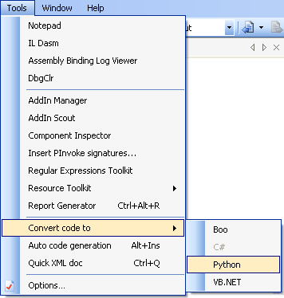
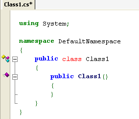

SharpDevelop 3.1 now supports converting C# and VB.NET code to IronPython. It can convert a single file or an entire project. The code to convert between these languages is still under development and has some limitations.
To convert a C# or VB.NET file, open it in SharpDevelop's text editor, then from Tools menu select Convert code to Python.

The code conversion is limited to converting classes so it will not convert an arbitary piece of code that is not inside a class.

To convert a C# or VB.NET project, open it in SharpDevelop, then from the Project menu select Convert From C# to Python.
Once converted the project will most likely not compile straight away due to limitations in the implementation. At the time of writing converting a project has the following limitations:
Converting code to IronPython was originally supported in SharpDevelop 2.2 and was based on converting code to a Microsoft CodeDOM and then getting IronPython 1.0 to generate the Python code. In IronPython 2.0 this CodeDOM support was removed so the code conversion feature was removed from SharpDevelop 3.0 since that was using IronPython 2.0. In SharpDevelop 3.1 the code conversion has been rewritten to no longer use the CodeDOM support. It now works by executing the following simple steps: